| Cumulative threshold | Cloglog threshold | Description | Fractional predicted area | Training omission rate |
|---|---|---|---|---|
| 1.000 | 0.020 | Fixed cumulative value 1 | 0.528 | 0.000 |
| 5.000 | 0.089 | Fixed cumulative value 5 | 0.337 | 0.000 |
| 10.000 | 0.165 | Fixed cumulative value 10 | 0.248 | 0.000 |
| 24.517 | 0.363 | Minimum training presence | 0.131 | 0.000 |
| 40.071 | 0.578 | 10 percentile training presence | 0.073 | 0.095 |
| 32.819 | 0.480 | Equal training sensitivity and specificity | 0.095 | 0.095 |
| 24.517 | 0.363 | Maximum training sensitivity plus specificity | 0.131 | 0.000 |
| 5.019 | 0.090 | Balance training omission, predicted area and threshold value | 0.337 | 0.000 |
| 11.102 | 0.181 | Equate entropy of thresholded and original distributions | 0.235 | 0.000 |
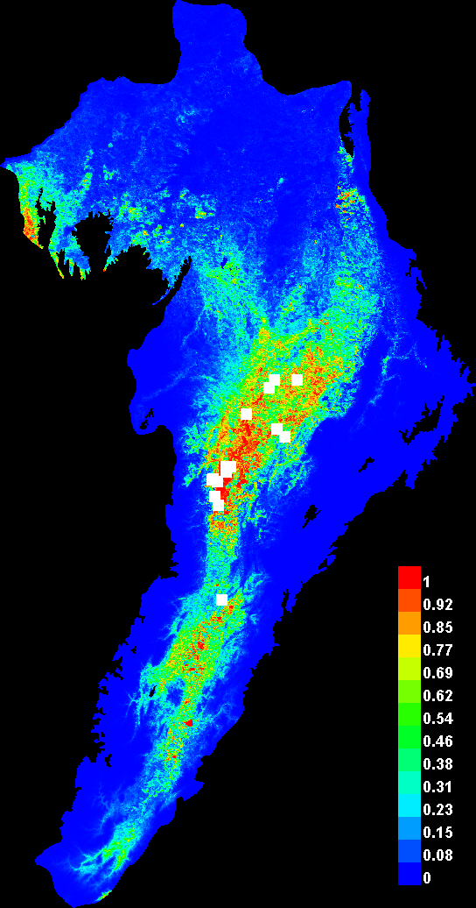
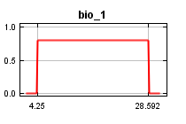
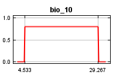
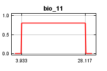
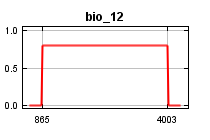
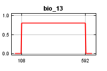
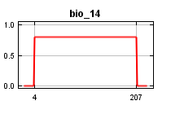
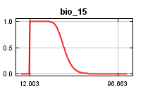
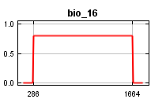
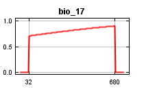
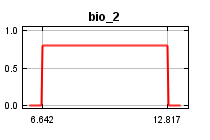
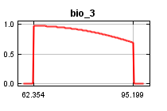
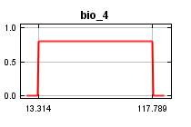
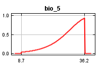
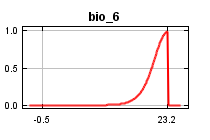
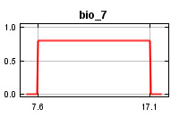
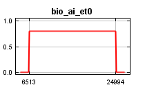
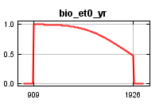
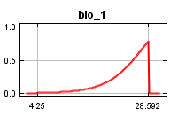
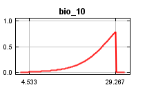
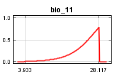
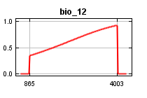
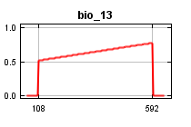
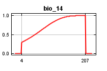
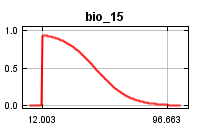
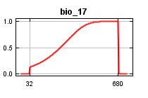
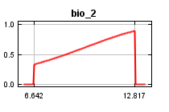
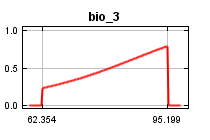
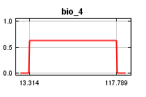
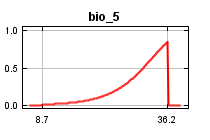
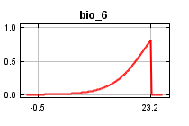
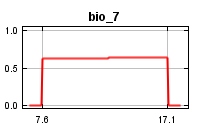
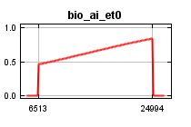
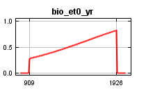
| Variable | Percent contribution | Permutation importance |
|---|---|---|
| bio_6 | 34.8 | 48.2 |
| bio_17 | 31.4 | 0 |
| bio_15 | 27.4 | 45.2 |
| bio_11 | 2.5 | 0 |
| bio_13 | 1.9 | 0 |
| bio_5 | 1.5 | 3.9 |
| bio_3 | 0.4 | 0.7 |
| bio_et0_yr | 0.1 | 2 |
| bio_2 | 0 | 0 |
| bio_16 | 0 | 0 |
| bio_4 | 0 | 0 |
| bio_14 | 0 | 0 |
| bio_7 | 0 | 0 |
| bio_12 | 0 | 0 |
| bio_ai_et0 | 0 | 0 |
| bio_10 | 0 | 0 |
| bio_1 | 0 | 0 |